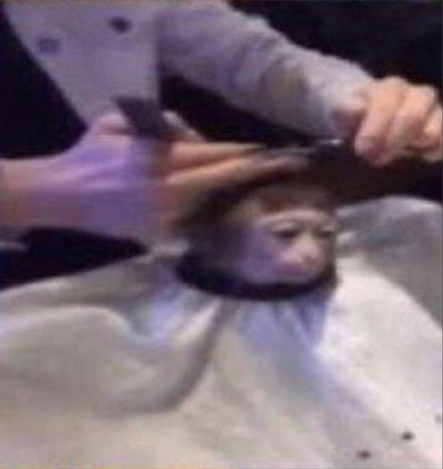

hello!
my name is einar.
I'm currently a masters student at UCLA studying CS and I love to teach.
as I'm writing this my flight back home has been delayed for the third time and there is no end in sight. I think my website is due for a refresh.
if you want to check out my old, slightly embarrassing portfolio, click here.